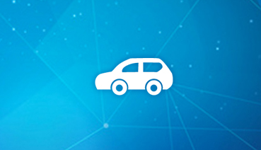

足迹
成果
-
2010年:承担武汉市“十城千辆”电动汽车大规模商业示范运营安全监控系统建设。
-
2011年:承担东风日产“聆风”示范推广安全监控系统建设。
-
2012年:承担武汉市城管车辆安全运行监控系统建设。
-
2012年:承担武汉市公交集团“专车服务”运行管理系统建设。
-
2013年:承担武汉市官方新能源汽车安全监控平台建设。
-
2013年:承担东风日产乘用车公司新能源汽车安全监控平台建设。
-
2014年:承担湖北省电力系统生产、公务用车安全运行平台建设。
-
2014年:承担东风电动新能源汽车安全监控系统建设。
-
2014年:承担武汉市科技局关键攻关项目“智能充电”系统建设。
-

2015年:承担国家863项目“电动汽车大规模分时租赁”系统平台建设。
-
2015年:与中国电信签署SI战略合作协议。
-
2015年:承担海马汽车有限公司新能源汽车安全监控系统建设。
-
2015年:承担东风商用车新能源商用车安全监控系统建设。
-
2016年:承担比亚迪汽车工业有限公司新能源汽车安全监控系统建设。
-
2016年:承担郑州日产汽车有限公司新能源汽车安全监控系统建设。
-
2016年:与国家电网建立战略合作，广州市、重庆市、江西省等公共平台建设
-
2013年2月19日汽车地理位置实时监控及外接车载设备数据交换设备
2013年2月19日汽车CAN总线数据实时监控设备
2013年3月6日新能源汽车安全监控系统
2013年6月20日电动新能源车辆检测数据分析模型软件
-
2013年2月19日汽车CAN总线数据及外接车载设备数据交换设备
2013年2月19日汽车外接车载设备数据交换设备
2013年6月20日电动新能源车辆GPS位置监控系统
2013年11月27日申请成为高新技术企业
-
2013年12月10日新能源公交自动发车系统
2014年3月11日获得软件企业认定证书
2015年1月1日武汉电动汽车大规模分时租赁与集成示范运营
2016年7月28日008E车载终端通过第三方检测
-
2013年12月30日软件产品登记证书
2014年5月1日新能源车辆信息管理系统
2015年1月1日基于车网电网的电动新能源汽车智能充电系统
2016年7月31日获得CMMI认证